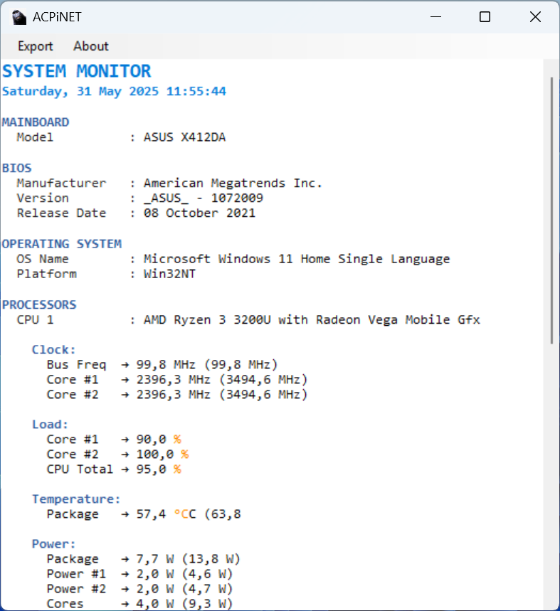

Copyright (c) 2025 Ari Sohandri Putra. All Rights Reserved.
ScreenShot
 |
Welcome !
ACPi.dll is a lightweight .NET library designed to provide access to real-time system hardware information including CPU, GPU, RAM, HDD, and motherboard details. It enables developers to build monitoring tools and system diagnostic utilities effortlessly.
Features
| Feature |
Description |
| GetUserName() |
Retrieves the current Windows user name |
| GetCPUName() |
Returns the name/model of the processor |
| GetCPUInfo() |
Retrieves CPU temperature, clock speed, and load |
| GetRAMInfos() |
Provides comprehensive RAM usage statistics |
| GetGPUInfo() |
Returns GPU load, clock, temperature, and fan speed |
| GetHDDInfo() |
Returns hard drive temperature and usage |
| GetMainboardName() |
Returns the motherboard model name |
| GetCoreCount() |
Returns the number of physical CPU cores |
Installation
- Download ACPi_NET2.0 or Download ACPi_NET4.0 and place it in your project directory.
- In Visual Studio:
- Right-click your project → Add Reference...
- Go to the Browse tab and select ACPi.dll
- Click OK
Usage Examples
C# Example
using ACPi;
class Program
{
static void Main()
{
CPU cpu = new CPU();
Console.WriteLine("User: " + cpu.GetUserName());
Console.WriteLine("CPU: " + cpu.GetCPUName());
var rams = cpu.GetRAMInfos();
foreach (var ram in rams)
{
Console.WriteLine("RAM: " + ram.Name);
Console.WriteLine("Load: " + string.Join(", ", ram.Load));
Console.WriteLine("Used: " + string.Join(", ", ram.Used));
Console.WriteLine("Available: " + string.Join(", ", ram.Available));
Console.WriteLine("Total: " + string.Join(", ", ram.Total));
}
var gpus = cpu.GetGPUInfo();
foreach (var gpu in gpus)
{
Console.WriteLine("GPU: " + gpu.Name);
Console.WriteLine("Temperature: " + string.Join(", ", gpu.Temperature));
Console.WriteLine("Clock: " + string.Join(", ", gpu.Clock));
Console.WriteLine("Load: " + string.Join(", ", gpu.Load));
Console.WriteLine("Fan Speed: " + string.Join(", ", gpu.Fan));
}
}
}
VB.NET Example
Imports ACPi
Module Module1
Sub Main()
Dim cpu As New CPU()
Console.WriteLine("User: " & cpu.GetUserName())
Console.WriteLine("CPU: " & cpu.GetCPUName())
Dim rams = cpu.GetRAMInfos()
For Each ram In rams
Console.WriteLine("RAM: " & ram.Name)
Console.WriteLine("Load: " & String.Join(", ", ram.Load))
Console.WriteLine("Used: " & String.Join(", ", ram.Used))
Console.WriteLine("Available: " & String.Join(", ", ram.Available))
Console.WriteLine("Total: " & String.Join(", ", ram.Total))
Next
Dim gpus = cpu.GetGPUInfo()
For Each gpu In gpus
Console.WriteLine("GPU: " & gpu.Name)
Console.WriteLine("Temperature: " & String.Join(", ", gpu.Temperature))
Console.WriteLine("Clock: " & String.Join(", ", gpu.Clock))
Console.WriteLine("Load: " & String.Join(", ", gpu.Load))
Console.WriteLine("Fan Speed: " & String.Join(", ", gpu.Fan))
Next
End Sub
End Module
Compatibility
- NET Framework : .NET 2.0/4.0 or newer.
- Architecture: Works with both 32-bit and 64-bit applications (recommended: target x64)
Notes
- All functionality is accessed via the CPU class in the ACPi namespace.
- Ideal for system diagnostics, hardware dashboards, performance monitoring tools, and similar utilities.
|